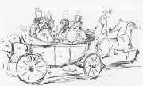

Stanfield: Norská hlídková loï

Stanfield: Bouøe
|
ANGLICKİ REALISMUS
Velká Británie byla v 19. století koloniální i prùmyslovou velmocí. Od 30. let zde vznikají první dìlnické organizace (Sdruení londınskıch dìlníkù). Odborové hnutí vyústilo v sepsání Charty lidu, její autoøi poadovali zvıšení mezd, zkrácení pracovní doby nebo všeobecné volební právo. Ve stejné dobì se formují zárodky pozdìjší Liberální a Konzervativní strany. Roku 1833 bylo zrušeno otroctví v britskıch koloniích. Symbolem této epochy se stalo dlouhé panování královny Viktorie (1837-1901). Pro viktoriánskou spoleènost byla charakteristická upjatá morálka a postupné reformy, napø. rozšiøování volebního práva nebo vyhlášení samosprávy v britskıch koloniích (Austrálie, Kanada, Novı Zéland atd.).
Realistické tendence se zaèaly projevovat v dílech Charlese Dickense. K jeho pøátelùm patøili malíøi Daniel Maclise a Clarkson Stanfield. Oblíbenımi malíøi byli rovnì Benjamin Robert Haydon, Edwin Henry Landseer nebo William Powell Frith.
Frith: Nádraí
|
Maclise: Vyprávìní za zimního veèera
Maclisova ilustrace k Dickensovi
|
Charles Dickens (1812-1870)
Charles Dickens [èárlz dikinz] pracoval od 12 let v továrnì na leštidla, protoe jeho otec skonèil ve vìzení pro dluníky. Pozdìji se ivil jako písaø a novináø. S Catherine Hogarttovou mìl 9 dìtí. Cestoval po Americe a poøádal charitativní veøejná ètení. Kromì satirické prvotiny Kronika Pickwickova klubu psal romány s dìtskımi hrdiny Oliver Twist, Mikuláš Nickleby, Staroitníkùv krám, ivot a osudy Davida Copperfielda, Ponurı dùm, Zlé èasy, Malá Dorritka nebo Nadìjné vyhlídky. Kadoroènì vydával vánoèní povídku (Vánoèní koleda prózou, Kouzelná rybí kostièka...) a vìnoval se i tvorbì pro dìti.
Umíš pøevyprávìt dìj Dickensovıch dìl ivot a osudy Davida Copperfielda a Vánoèní koleda prózou?
Uspoøádejte charitativní autorské ètení. Na co vìnujete vıtìek?

Thrackeray: Dickens a jeho pøátelé – Forster, Maclise a Stanfield
|
Charles Dickens: Oliver Twist aneb Sirotkova cesta
Sirotek Oliver Twist se vyrovnává s tìkım ivotem v chudobinci, kde ho èeká pouze hlad a bezpráví. Jeho situace se nezlepší, ani kdy se stane pomocníkem hrobníka. Po útìku do Londına se ho ujme zloèinecká banda. Olivera „vyuèuje“ Ferina Lišák, ale ten se snaí dráze zlodìje vyhnout. Kdy mu pomùe hodnı pan Brownlow, zloèinci Olivera unesou. Donutí ho vykrást dùm Maylieovıch, ale Oliver je zranìn a rodina o nìj s láskou peèuje. Všechny èleny bandy èeká smrt a Oliver se stává Brownlowovım adoptivním synem a dìdicem jeho jmìní. Zároveò se dozvídá pravdu o svém pùvodu.
Dickens upozoròuje na sociální problémy viktoriánské Anglie, ale jeho øešení konfliktù je znaènì idealistické.
Charles Dickens: Kronika Pickwickova klubu
Humoristickı román Kronika Pickwickova klubu popisuje pøíhody ètyø londınskıch pøátel, kteøí se rozhodnou navštívit venkov. Nepraktiènost Samuela Pickwicka a jeho spoleèníkù je vrhá do mnoha komickıch situací. Pan Pickwick se dokonce ocitne ve vìzení pro dluníky, protoe odmítá zaplatit náhradu 750 liber, kterou soud pøiøkl jeho bytné. Ta na nìj podala alobu, protoe jí pøislíbil manelství. Šlo ovšem o nedorozumìní – pan Pickwick si chtìl pouze najmout sluhu Samuela Wellera... Nakonec se èlenové klubu rozcházejí, oení se a zaøadí se do bìné spoleènosti.
Román pùvodnì vycházel èasopisecky jako doprovodnı text k sérii obrázkù. Mìlo jít o pøíbìhy ze sportovního prostøedí, ale na nátlak Dickense a po sebevradì prvního ilustrátora, se charakter textu zcela zmìnil.
Další realisté a jejich díla
William Makepeace Thackeray: Trh marnosti, Kniha o snobech
Anthony Trollope: Barchesterské vìe, Jak dnes ijeme
George Eliotová: Mlın na øece Flossu, Middlemarch
|

Dickens
Jakı je vztah mezi Oliverem, Rózou a Monksem?
Phiz: Úspìšnı kandidát (Kronika Pickwickova klubu)
Jak dosahuje Dickens komického úèinku?
Srovnej líèení volebního boje s dnešními prostøedky.
Podle èeho by ses rozhodoval/a pøi volbách? Jakému kandidátovi bys dal/a svùj hlas?
Co si myslíš o demokracii? Má nìjaká negativa?
|
Spojené státy americké
Whistler: Kompozice v šedé a èerné è.1: Portrét umìlcovy matky
Cassattová: Koupel
|
AMERICKİ REALISMUS
Hlavním problémem americké demokracie bylo postavení èernošskıch obyvatel. Zatímco v severních prùmyslovıch státech byli svobodní, v jiních zemìdìlskıch státech ili jako otroci. Nemìli obèanská práva a fakticky byli majetkem svıch pánù. Spory mezi obìma oblastmi vedly k obèanské válce Severu proti Jihu (1861-1865). I po vítìzství Severu a zrušení otroctví Abrahamem Lincolnem (1809-1865) pøetrvával v celıch Spojenıch státech americkıch rasismus. Tento prezident zaloil po rozkolu v Demokratické stranì roku 1854 Republikánskou stranu. Od té doby se tyto dvì politické strany støídají u moci.
V Americe zaèaly vznikat první vıškové stavby architektù H.Hobsona Richardsona a L.Sullivana, které po roce 1890 nabyly charakteru mrakodrapù – Home Life Insurance Building, Tacoma Building (Chicago). Z technickıch staveb stojí za zmínku Brooklynskı most J.Roeblinha. V malíøství vynikli James McNeill Whistler [dejmz mekníl vislr], J.Wright, T.Tillard nebo Mary Cassattová, která malovala hlavnì dìti nebo matky.
Roeblinh: Brooklynskı most v New Yorku
|

Holabird, Roche: Tacoma Building v Chicagu
Cassattová: Ètenáøka
|
Herman Melville (1819-1891)
Herman Melville [hérmen melvil] proil spoustu dobrodruství. Pracoval jako písaø, uèitel a plavèík. Slouil na velrybáøské lodi Acushnet, odkud uprchl kvùli surovému zacházení na ostrov Nukuhivu (Marquézy), kde ho zajal kmen lidojedù z údolí Taipi. Po útìku se dostal na australskou loï, která ho zavezla na Tahiti, a pøes Havajské ostrovy se vrátil do Spojenıch státù. Melville psal romány z námoønického prostøedí – Taipi, Omú (Tulák na ostrovech), První plavba a Bílá velryba. Jeho díla ale nemìla valnı ohlas.
|
Herman Melville: Bílá velryba
Rozsáhlı román Bílá velryba je pøíbìhem o souboji èlovìka s pøírodou, Bohem i se sebou samım. Vypravìè Izmael se nalodí na velrybáøskou loï Pequod, které velí kapitán Achab. Ten se rozhodl ulovit legendární bílou velrybu (vorvanì) zvanou Moby Dick, protoe ho bìhem pøedchozí vıpravy pøipravila o nohu. Posádka trpí posedlostí kapitána a zranìnı Moby Dick nakonec celou loï potopí.
Základní pøíbìh doplòují podrobné popisy práce velrybáøù, filozofické reflexe a mystické pasáe. Zvláštì dùleitá je alegorická rovina románu. Autor èasto odkazuje k Bibli, zvláštì prostøednictvím jmen nìkterıch postav.
|
Charakterizuj postavu kapitána Achaba.
Co tì na ukázce zaujalo?
Najdi v ní ohlasy Bible a køesanství.
Jak je vylíèen Moby Dick?
Co si myslíš o lovu velryb?
|
Mark Twain (1835-1910)
Samuel Langhorne Clemens [semjuel lenghórn klemenz] psal pod pseudonymem Mark Twain [márk tvejn], co bylo volání lodního mìøièe, e je øeka hluboká 2 sáhy. Pracoval jako sazeè, novináø a lodivod parníku na Mississippi. Pozdìji se pøestìhoval za bratrem, kterı se stal guvernérem Nevady, na Divokı západ. Zkoušel štìstí jako zlatokop a psal humoristické prózy. K jeho nejznámìjším dílùm patøí romány Dobrodruství Toma Sawyera, Dobrodruství Huckleberryho Finna a satira Yankee z Connecticutu na dvoøe krále Artuše. Napsal cestopisy Jak jsem se protloukal a ivot na Mississippi, povídku Milionová bankovka, historickı pøíbìh z 16. stol. o králi Eduardovi VI. Princ a chuïas nebo sbírku povídek Proslulı skákavı abák z okresu Calaveras.
|
Mark Twain: Dobrodruství Huckleberryho Finna
Román Dobrodruství Huckleberryho Finna navazuje na populárnìjší Dobrodruství Toma Sawyera, ve kterém oba pøátelé proijí øadu zajímavıch pøíhod a spoleènì naleznou poklad. Hucka adoptuje vdova Douglassová, ale bıvalı tulák u ní není šastnı. Vìènì opilı otec Hucka odvleèe do opuštìné chatrèe. Ten od nìj uteèe, pøedstírá, e byl zabit, a usadí se na blízkém ostrovì. Zde se setkává s uprchlım otrokem Jimem. Spoleènì postaví vor a snaí se po Mississippi a Ohiu doplout do svobodnıch severoamerickıch státù. To se jim ale nepodaøí, protoe minou soutok obou øek a padnou na podvodníky, kteøí Jima vydají jianskım vesnièanùm. Huck a Tom se znovu setkávají a spoleènımi silami Jima osvobodí.
Dobrodruství Huckleberryho Finna popisuje závané spoleèenské problémy, pøedevším otroctví a nerovnoprávné postavení èernošskıch obyvatel.
|

Charakterizuj postavy Krále a Vévody.
Rozhodl se Huck správnì? Proè?
Co bys na jeho místì udìlal/a ty?
Proè si Huck myslí, e pøijde do pekla?
Co si myslíš o otroctví a rasismu?
|
Jack London (1876-1916)
Jack London [dek landn] musel od 15 let ivit celou rodinu. Pracoval jako kamelot, rozváel led, zametal hostince a byl dìlníkem v konzervárnì. V 16 letech si za pùjèené peníze koupil plachetnici a stal se ústøicovım pirátem. Pozdìji byl pomocníkem námoøní policie a vystøídal øadu dalších zamìstnání. Spolu s tisícovkami nezamìstnanıch se zúèastnil pochodu na Washington a v dobì zlaté horeèky se vydal na Klondyk. Spáchal sebevradu. London napsal autobiografické prózy Démon alkohol, Povídky rybáøské hlídky a Martin Eden. Všímal si sociálních problémù – román Lidé z propasti, stati Tøídní boj a Stávkokaz. Nejznámìjší jsou jeho prózy o divoké pøírodì Volání divoèiny, Bílı tesák, Moøskı vlk a Tulák po hvìzdách.
|
Jack London: Martin Eden
Román s autobiografickımi prvky vypráví o ivotních osudech námoøníka Martina Edena. Ten se zamiluje do dcery právníka Ruth Morseové. Aby se jí vyrovnal, pracuje na svém vzdìlání a usiluje o lepší spoleèenské i hmotné postavení. Nakonec se rozhodne pro dráhu spisovatele, ale není pøíliš úspìšnı. Martin Eden odmítne pracovat v kanceláøi milenèina otce a nakonec je zrušeno i zasnoubení s Ruth. Hlavní hrdina proívá hlubokou osobní krizi, protoe tím ztratil ivotní cíl, a volí dobrovolnı odchod ze svìta.
Další realisté a jejich díla
Bret Harte: Kalifornské povídky
Harriet Beecher Stoweová: Chaloupka strıèka Toma
Stephen Crane: Rudı odznak odvahy
|

Jack London na voze
Charakterizuj postavu Martina Edena. Jakım vıvojem projde?
Jak autor ukazuje nevzdìlanost Martina Edena?
Co povauješ za smysl ivota?

Whistler: Šedá a støíbrná: Staré pobøeí
|
Internetové stránky
Victorian web
Dickens
Dickens
Dickens
Dickens
Kuèera: Zlé èasy, èlánek
Melville
Melville
Moby Dick
Mark Twain
Mark Twain
Mark Twain
Mark Twain
Èernoušek: Démon alkohol, èlánek
London: Tulák po hvìzdách
London
London
London
London
London
London
London
Whistler, americkı malíø
Cassattová, americká malíøka
Brooklynskı most, New York
Brooklynskı most, New York
Bednáøová: Brooklynskı most, èlánek
|
Doporuèená èetba
Amerika se smìje, Èeskoslovenskı spisovatel, Praha 1958
Dìjiny anglické literatury, 2.díl, pøel.Hornátovi, SNKLU, Praha 1963
Dickens, Charles: Kronika Pickwickova klubu (2 svazky), pøel. Tilschovi, Odeon, Praha 1973
Dickens, Ch.: Oliver Twist, pøel. Tilschovi, Vyšehrad, Praha 1985
Dickens, Ch.: Vánoèní povídky
Foner, P.S.: Jack London, americkı rebel , Praha 1952
Laciné vydání Londonovıch spisù (74 svazkù)
Láska k ivotu aneb Kniha o podivuhodném dobrodruném ivotì, díle, láskách, bojích a smrti Jacka Londona, spisovatele, zlatokopa, námoøníka, tuláka a snílka, Svoboda, Praha 1977
London, Jack: Démon alkohol, Tulák po hvìzdách, pøel. Albrecht, Pospíšil, Odeon, Praha 1966
London, J.: Martin Eden, pøel. E.Masnerová, Svoboda, Praha 1987
London, J.: Bílı tesák
Melville, Herman: Bílá velryba, pøel. Kornelová, Klíma, Moby Dick, Praha 1996
Sebrané spisy Marka Twaina (37 svazkù)
Slovník spisovatelù, Anglie..., Libri, Praha 1996
Slovník spisovatelù, Spojené státy americké, Odeon, Praha 1979
Spisy Charlese Dickense (21 svazkù)
Stone, Irving: Námoøník na koni, pøel. J.Fastrová, Mladá fronta, Praha 1973 (román o Londonovi)
Twain, Mark: Dobrodruství Toma Sawyera, Dobrodruství Huckleberryho Finna, pøel. F.Gel, Odeon, Praha 1976
Twain, Mark: Princ a chuïas, Yankee z Connecticutu na dvoøe krále Artuše, pøel. F.Gel, Odeon, Praha 1976
Vybrané spisy Jacka Londona
Wilson, Angus: Svìt Charlese Dickense, pøel. Z.Kirschner, Odeon, Praha 1979
|
Vypracuj písemnı referát o nìkteré z uvedenıch knih.

Whistler: Symfonie v bílé è.1: Bílá dívka
|
|